Plots for b0

Plots for sig.transect
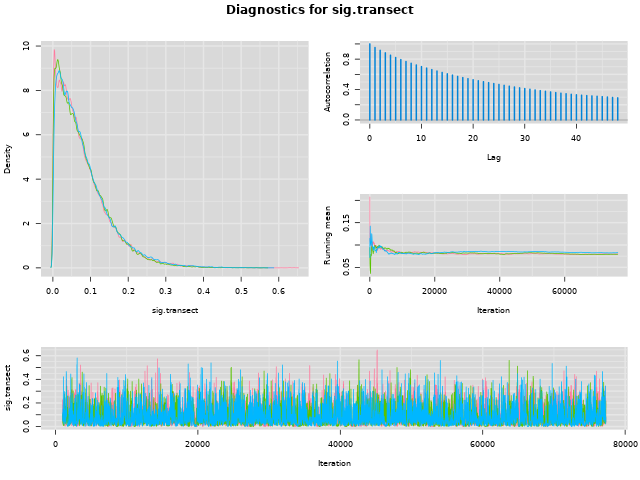Plots for sig.site
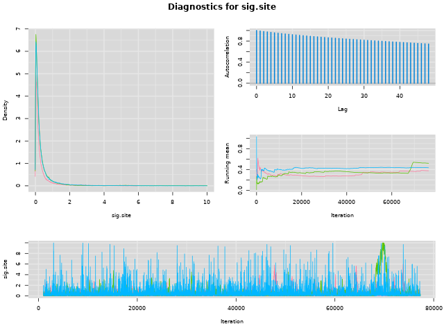Plots for deviance
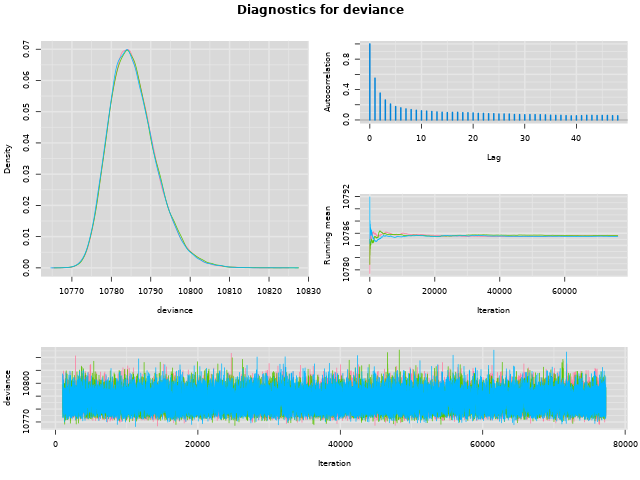Plots for b0.transect
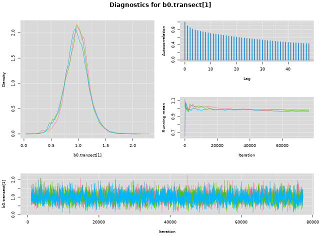 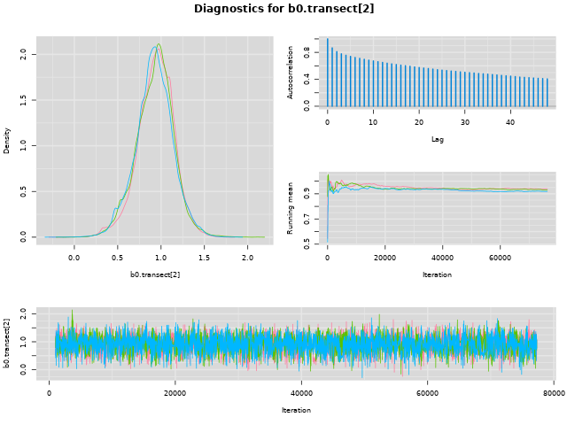Plots for b0.site
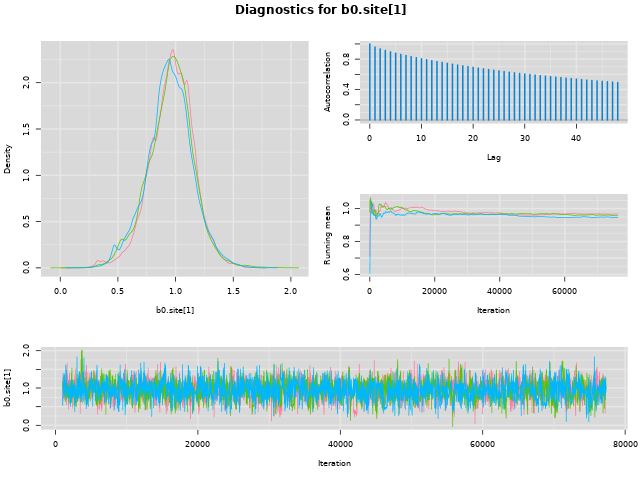 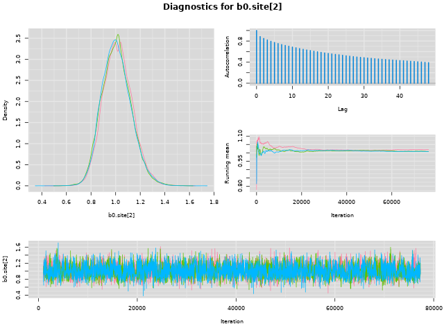 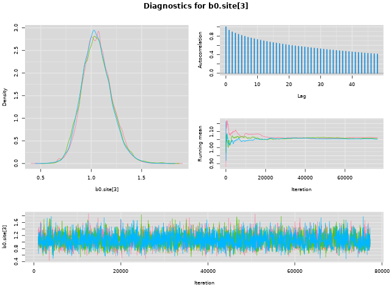Plots for b
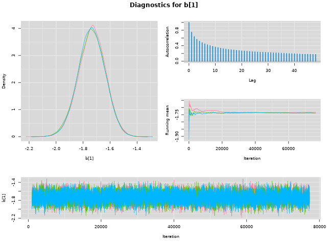 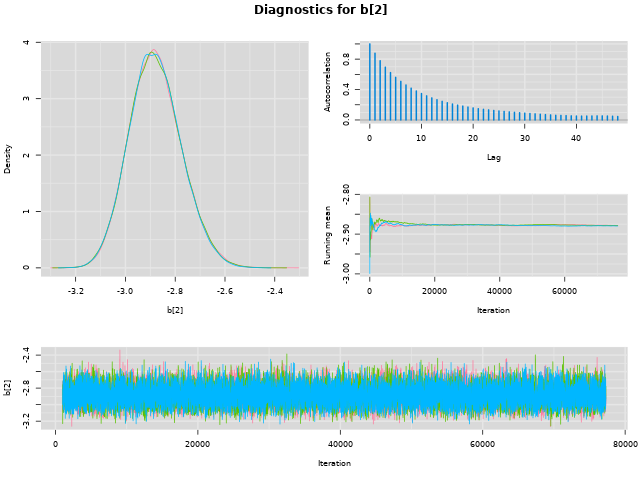 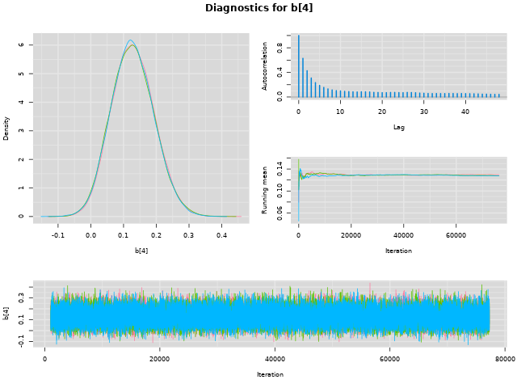 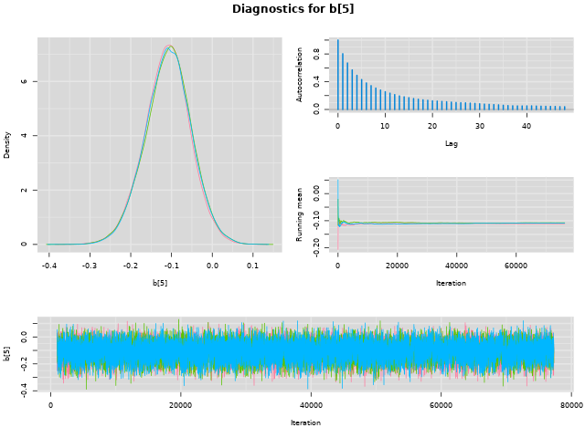Plots for b6
b6[1]. Error in bw.SJ(x, method = "ste"): sample is too sparse to find TD
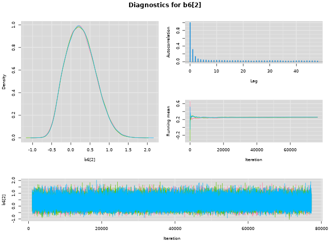 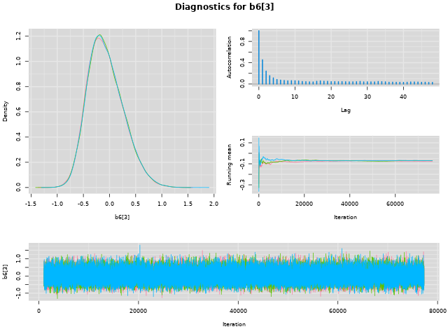 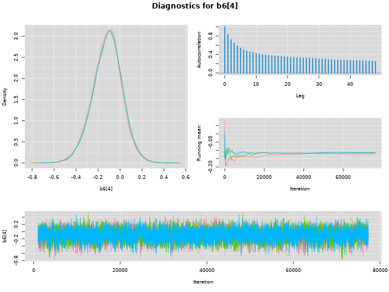 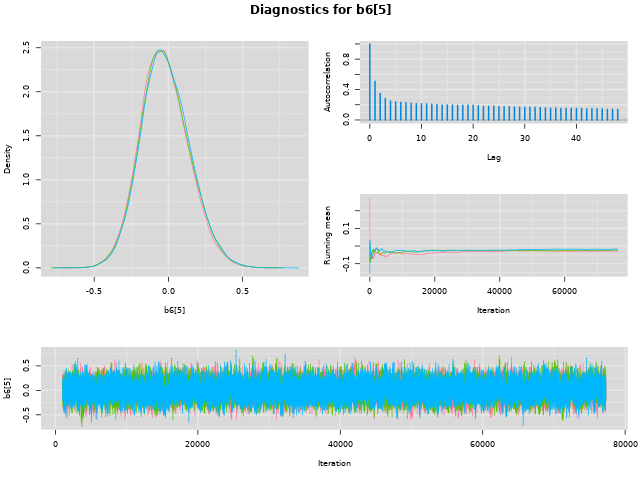